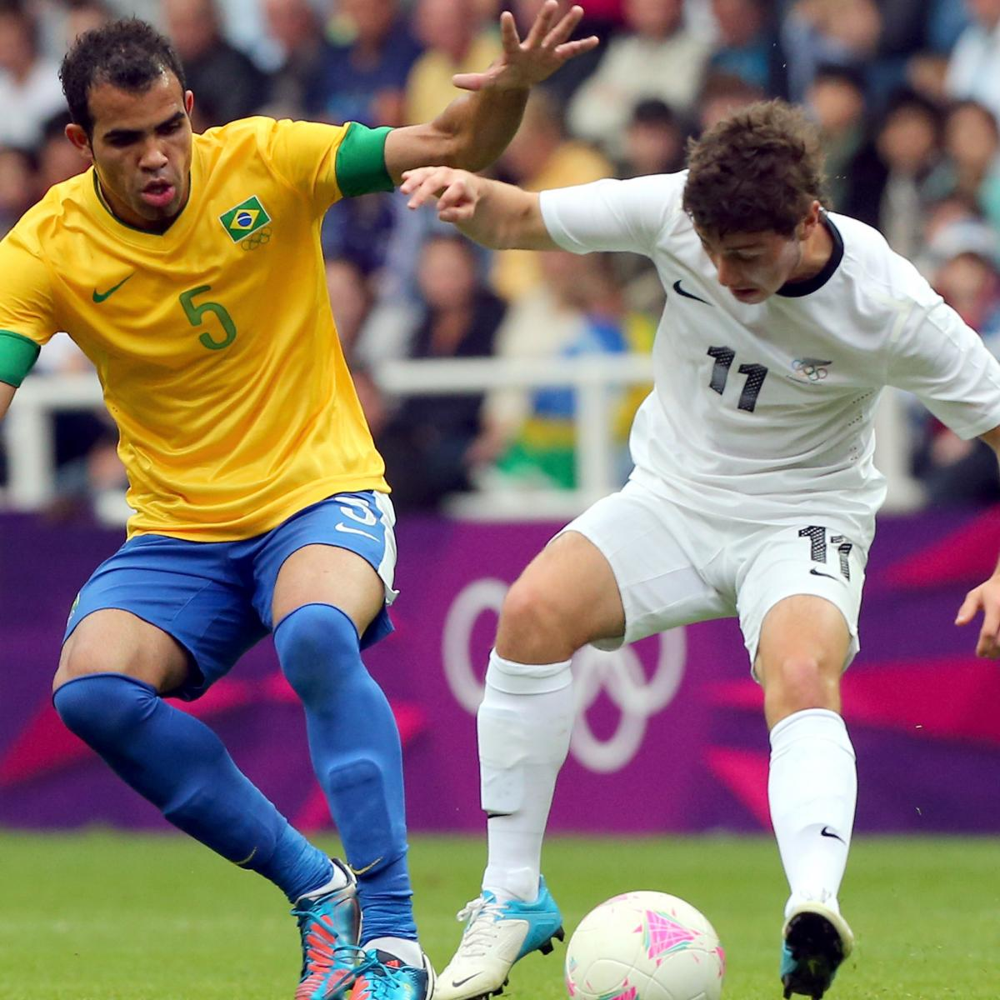

FootBall
Football, also known as soccer in some countries, is a team sport played between two teams of eleven players each. The objective of the game is to score goals by getting the ball into the opponent's net. Played on a rectangular field with a goal at each end, football emphasizes teamwork, strategy, and skill. Matches are typically played in two halves of 45 minutes each, with added time for stoppages. The team with the most goals at the end of the match wins. Football is celebrated for its global appeal and has numerous leagues, tournaments, and competitions around the world.
- The game is played by two teams of eleven players each.
- A match consists of two 45-minute halves with a 15-minute halftime break.
- The objective is to score more goals than the opposing team by getting the ball into their goal.
- The ball can be played with any part of the body except the hands and arms, unless you are the goalkeeper.
- Goalkeepers are allowed to use their hands, but only within their penalty area.
- A goal is scored when the entire ball crosses the goal line between the goalposts and beneath the crossbar.
- Offside rule: A player is offside if they are nearer to their opponent's goal line than both the ball and the second-last opponent when the ball is played to them, unless they are in their own half of the field.
- Fouls and misconduct: Players are penalized for offenses such as kicking, tripping, charging, striking, or pushing an opponent, and for unsporting behavior.
- Free kicks: Direct or indirect free kicks are awarded for fouls and breaches of the rules. A direct free kick can be kicked directly into the opponent's goal, while an indirect free kick must touch another player before a goal can be scored.
- Penalty kicks: Awarded when a direct free kick offense is committed by a player inside their own penalty area. The kick is taken from the penalty spot, 12 yards from the goal line.
- Throw-ins: Awarded when the ball completely crosses the touchline, and is taken by the team opposite to that which last touched the ball. The ball is thrown in from the point where it left the field.
- Corner kicks: Awarded when the ball crosses the goal line (but not into the goal) and was last touched by a defending player. The kick is taken from the corner nearest to where the ball crossed the line.
- Goal kicks: Awarded when the ball crosses the goal line (but not into the goal) and was last touched by an attacking player. The kick is taken from within the goal area by the defending team.
- Substitutions: Teams are allowed to make a limited number of substitutions during a match. Substitutes can only enter the field with the referee's permission.
- Yellow and red cards: Yellow cards are given for cautionable offenses, while red cards are given for serious offenses, resulting in the player's ejection from the game.



Know More